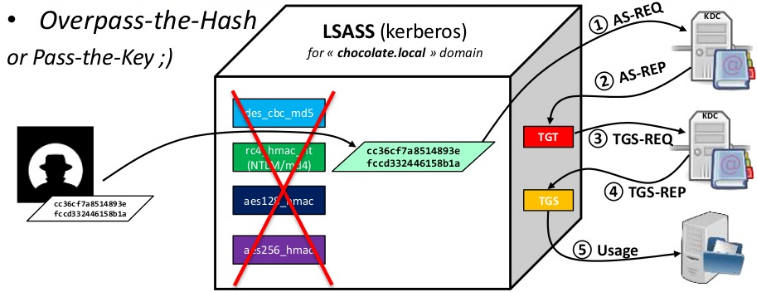

Kerberos
It's all about keys and tickets
Example:
Adminsitrateur wants to access cifson a Win81 machine on chocolate.local domain
Needs 3 keys, all are in Active Directory
And all are derived from password
Kerberos::Keys- The DClong-term secret key (domain key)
- Under the mysteriouskrbtgtaccount (rc4, aes128, aes256, des . . . )
- Needed to sign Microsoft specific data in "PAC", encrypt TGT
- The Clientlong-term secret key (derived from password)
- Under the user/computer/server account
- Needed to check AS-REQ, encrypt session key
- The Target/Servicelong-term secret key (derived from password)
- Under the computer/server account
- Needed to countersign data in "PAC" of TGS, encrypt TGS

OverPass-the-Hash (aka Pass-the-Key) involves using an acquired password hash to get a Kerberos ticket. This technique clears all existing Kerberos keys (hashes) for the current user and injects the acquired hash into memory for the Kerberos ticket request. The next time a Kerberos ticket is required for resource access, the injected hash (which is now a Kerberos key in memory) is used to request the Kerberos ticket. Mimikatz provides the capability to perform OverPass-the-Hash. This is a stealthier method than PtH since there are ways to detect PtH.
Note: If the acquired hash is NTLM, the Kerberos ticket is RC4. If the hash is AES, then the Kerberos ticket uses AES.